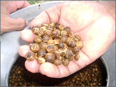
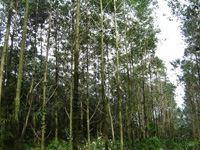
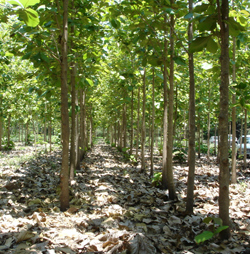
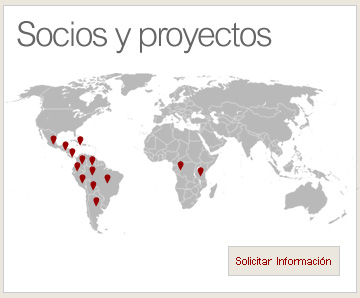
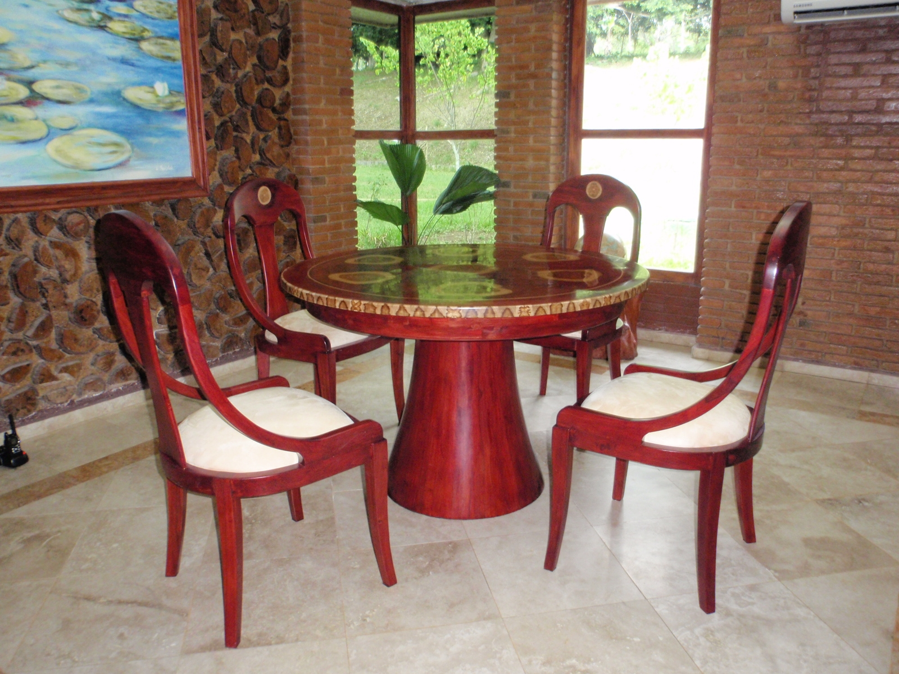

Una selección de imágenes que ilustran nuestro trabajo: desde las fuentes semilleras autorizadas por la ONS, el proceso de recolección y escarificación de semillas, hasta plantaciones comerciales y los productos finales obtenidos con madera de calidad genética superior.
Semillas Certificadas



Plantaciones Forestales




Productos Finales


¿Desea más información sobre nuestras fuentes semilleras?
Contáctenos y con gusto le compartimos documentación técnica y fotografías adicionales
de nuestras plantaciones y rodales semilleros autorizados por la ONS.
Escribirnos →
Escribirnos →